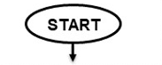
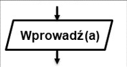
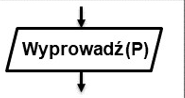
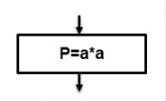
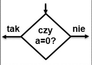
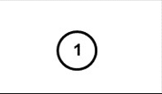
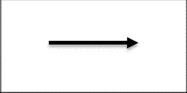
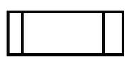

Algorytm to zestaw ściśle określonych czynności prowadzących do wykonania pewnego zadania. Określa sposób rozwiązywania problemu i ma zastosowanie w różnych dziedzinach. Języki programowania to narzędzia, które bardzo dobrze nadają się do zapisu algorytmów.
| nazwa bloku | opis | wygląd |
|---|---|---|
| Początek algorytmu | Rozpoczęcie algorytmu, wychodzi z niego tylko jedno połączenie, występuje w algorytmie tylko raz. |  |
| Koniec algorytmu | Wchodzi do niego jedno połączenie, może być ich wiele w algorytmie | |
| Wprowadź (a) | Wprowadzanie danych, jedno połączenie wchodzące i wychodzące, schemat może zawierać wiele takich bloków. |  |
| Wprowadź (P) | Wyprowadzenie wyników, jedno połączenie wchodzące i wychodzące, schemat może zawierać wiele takich bloków. |  |
| Blok operacyjny | Wykonywanie operacji - posiada jedno połączenie wchodzące i jedno wychodzące, w jednym bloku można wykonwać wiele operacji. Schemat może zawierać wiele takich bloków. |  |
| Blok decyzyjny lub warunkowy | Podejmowanie decyzji - sprawdzanie warunków. Posiada jedno połączenie wchodzące i 2 wychodzące - Tak gdy warunek jest spełniony i Nie gdy warunek nie jest spełniony. Schemat może posiadać wiele takich bloków. |  |
| Łącznik | Łącznik stosujemy gdy schemat występuje w kilku częściach. Numer umieszczony w bloku powinien być taki sam na obu łączonych przez nas częściach. |  |
| Połączenie | Połączenie bloków. Linia prosta lub łamana zakończona strzałką. Może łączyć bloki oraz dochodzić do innych połączeń. |  |
| Program | Symbol ten oznacza podłączenie podprogramu. |  |
| Łącznik międzystronnicowy | Służy do połączenia schematu jeśli nie miesci się na jednej stronie. | |